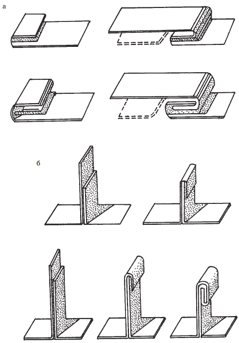
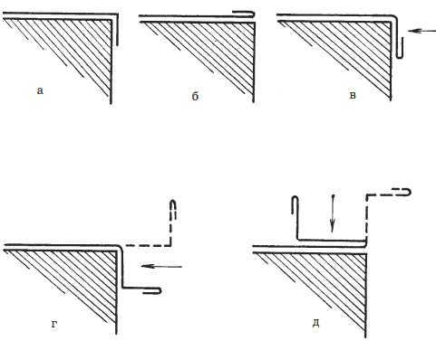
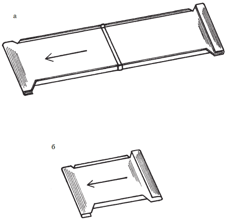
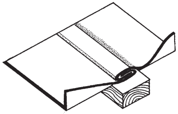
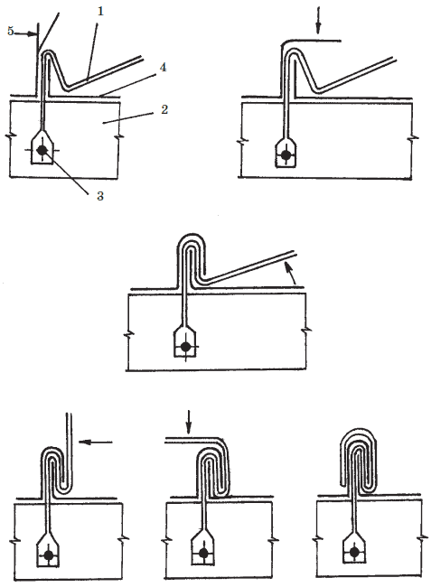
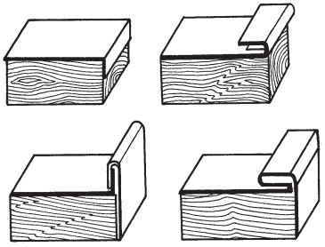
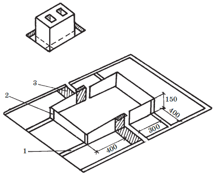
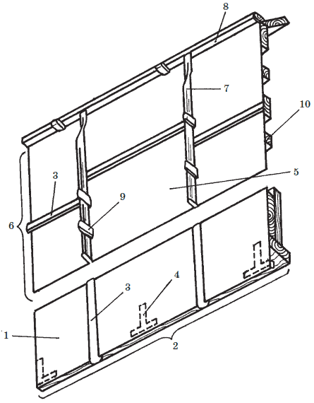
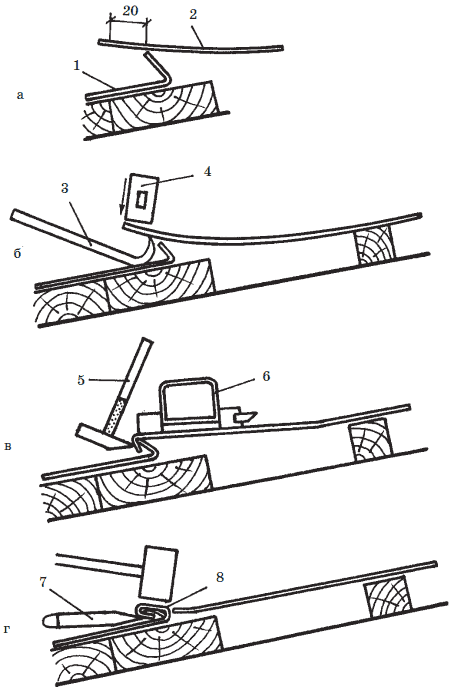

Из листовой стали кровля.

Кровли из листовой стали делают как правило на крышах со сложной геометрией. Из листов кровельной стали независимо от типа покрытия выполняются карнизные свесы, разжелобки, ендовы, надстенные желоба, водосточные трубы, различные фартуки и т. п.
До начала кровельных работ необходимо листы кровельной стали с двух сторон тщательно осмотреть и отсортировать. Ржавчину очищают стальными щетками. Выпуклости (хлопушки) выравнивают металлическим или деревянным молотком. Искривления листов, появившиеся при их транспортировке и хранении выправляют деревянным молотком-киянкой на металлической плите толщиной 12–20 мм. Нестандартные листы откладывают для изготовления мелких деталей, фартуков, водосточных труб и др. изделий. Затем приступают к разметке, обрезке, огрунтовке и соединению листов в картины.
Совет
Для изготовления одинаковых деталей применяют шаблоны (выкройки), которые кладутся на лист, прижимаются и очерчиваются по контуру. Для разметки кровельной стали существуют различные специальные инструменты: чертилка, рейсмус, металлический угольник, кернер, кронциркуль, нутромер, разметочный циркуль, линейка длиной 50-100 см, рулетка длиной 1, 2, 10 и 20 м.
После очистки листов стали от ржавчины их огрунтовывают, чтобы избежать в дальнейшем коррозии. Для огрунтовки листы с двух сторон протираются ветошью, смоченной натуральной олифой. Для того, чтобы избежать пропусков в огрунтовке, олифа слегка подкрашивается суриком и такие пропуски сразу обнаруживаются. Для этого на 1 кг олифы берется 0,1 кг тертого сурика. Огрунтованные листы в течение 24 часов выдерживаются в проветриваемом помещении до их полного высыхания, после чего могут использоваться для кровельных работ.
Заготовка картин из листовой сталиОтдельные кровельные листы прямоугольной формы со стандартными размерами – 1420x710 мм, перед укладкой на основание кровли соединяют между собой лежачими фальцами в рядовые полосы, состоящие из двух и более листов. Фальц или фальцевое соединение – это вид шва, образующегося при соединении листов стальной кровли. Кровельные листы с лежачими фальцевыми соединениями называют картинами. В каждую картину может быть соединено два и более листов ( рис. 42).

Рис. 42. Соединение стальных кровельных листов лежачими фальцами: а – последовательность выполнения одинарного и двойного лежачих фальцев; б – последовательность выполнения одинарного и двойного стоячих фальцев
Фальцевые соединения делятся на лежачие, стоячие и угловые – по внешнему виду, а также на одинарные и двойные – по степени их уплотнения. Угловые фальцы делятся на простые и комбинированные.
Технологический процесс формирования одинарного лежачего фальца состоит из следующих операций. Лист с отогнутыми углами укладывают на верстак; отгибают всю кромку на 90°; подготавливают кромку к сваливанию и сваливают ее на плоскость. Затем соединяют листы фальцем и уплотняют соединение, после чего подсекают фальц.
При формировании карнизного свеса верхняя часть этой картины подобна верхней части рядовой картины: она имеет отгиб кверху для лежачего фальца, соединяющего ее с другой картиной ската. Нижняя часть карнизного свеса снабжена капельником (отворотной губой для свеса). Капельник делают следующим образом ( рис. 43): на расстоянии 120 мм от торцового края листа размечают линию отгиба. По этой линии с обеих сторон картины делают надрезы длиной 40 мм правый и 25 мм левый, чтобы, во-первых, облегчить отгиб капельника и, во-вторых, сделать соединение капельников карнизного свеса более прочным. Далее отгибают вниз кромку на 15 мм ( рис. 43, а). Перевернуть лист кверху отгибом и свалив кромку на плоскость ( рис. 43, б), следует сдвинуть лист таким образом, чтобы кромка свешивалась с верстака на 20 мм, после чего ее отгибают вниз под прямым углом ( рис. 43, в). Лист переворачивают и отгибают вниз кромку высотой 40 мм ( рис. 43, г). В последний раз картину переворачивают и сваливают капельник на плоскость ( рис. 43, д).

Рис. 43. Технологическая схема изготовления капельника картины покрытия карнизного свеса
Капельник может быть с одинарным или двойным отгибом. Двойной капельник делает карнизный свес более прочным и лучше отводит воду.
Так получают карнизные свесы и картины рядового покрытия ( рис. 44).

Рис. 44. Картины рядового покрытия и карнизного свеса: а – рядовое покрытие; б – карнизные свесы
Двойными лежачими фальцами соединяют кровельные листы, предназначенные для изготовления карнизных свесов, надстенных желобов и разжелобков, а также рядовых покрытий на крышах монументальных зданий. Большое внимание при этом необходимо уделять качеству фальцевого соединения кровельных листов. Особенно тщательно следует загибать кромки по разметке, чтобы соединенные между собой листы образовали ровную рядовую полосу. Для этого при помощи киянки сначала загибают кромку листа на углах. Эти загибы используют в качестве маяков, удерживающих лист от смещения при дальнейшем отгибе всей кромки.
После этого лист переворачивают и сваливают кромку на его плоскость, оставляя между кромкой и листом зазор 3 мм. В такой же последовательности выполняют все операции и на втором листе, затем листы соединяют друг с другом загнутыми кромками и уплотняют фальц киянкой. Полученное фальцевое соединение не будет раздвигаться, если с одной стороны кровельный лист осадить вдоль фальца при помощи металлической планки и молотка.
При массовой заготовке картин одинарные фальцы для соединения кровельных листов формируют на фальцезагибочных станках.
Подготовка и последовательность выполнения одинарных и двойных лежачих и стоячих фальцев показана на рис. 42.
При монтаже металлического кровельного покрытия картины начинают укладывать в рядовую полосу с нижней части кровельного ската. Последующие картины укладывают таким образом, чтобы одинарное фальцевое соединение между ними можно было выполнить с учетом направления стока воды. Нижняя картина соединяется с верхней одинарным лежачим фальцем. Фальц располагают на обрешеточной доске ( рис. 45).

Рис. 45. Соединение картин кровельного покрытия одинарным лежачим фальцем, расположенным на обрешетке
Рядовые полосы крепят к обрешетке с помощью кляммер, изготовляемых из кровельной листовой стали. Кляммеры устанавливают между рядовыми полосами – по две на один кровельный лист. Нижнюю часть кляммер крепят к обрешетке гвоздем, а верхнюю заделывают в гребень стоячего фальца ( рис. 46).

Рис. 46. Заделка кляммеры в одинарный стоячий фальц: 1 – плоская кляммера; 2 – брусок обрешетки; 3 – гвоздь; 4 – лист с малым отгибом; 5 – лист с большим отгибом
После установки кляммер собранную из картин рядовую полосу придвигают вплотную к уложенной и прифальцованной рядовой полосе. Соединение полос стоячим фальцем кровельщик начинает от конька кровли, двигаясь вниз по направлению к карнизу.
Рядовые полосы соединяют одинарными стоячими фальцами при помощи двух молотков – большого и малого. Большой молоток используется в качестве передвижного упора, а малых – для подгиба и уплотнения кромки.
При устройстве металлических кровельных покрытий иногда необходимо получить угловые фальцевые соединения, например, при изготовлении колпаков и зонтов дымовых труб, при покрытии парапетов, брандмауэров и др. Последовательность операции при формировании таких соединений показаны на рис. 47.На кровельных листах, предназначенных для углового соединения, отгибают кромки на 90°, после чего на одном из них сваливают кромку на поверхность, оставляя между ними небольшой зазор.

Рис. 47. Установка кляммер и их крепление к обрешетке
Листы соединяют между собой таким образом, чтобы согнутая под углом 90° кромка одного листа входила в зазор между сваленной кромкой и плоскостью другого листа. После этого фальц уплотняют и сваливают его на поверхность первого листа.
Воротник дымовой трубы ( рис. 48) одна из самых трудоемких и уязвимых деталей стальной кровли.

Рис. 48. Воротник дымовой трубы для стальной кровли: 1 – двойной лежачий фальц; 2 – одинарный угловой фальц; 3 – соединение внахлест
Изготовление воротника требует мастерства и точности расчетов, иначе он даст течь. Воротник изготавливают из двух П-образных деталей, соединяющихся между собой внахлестку в направлении стока воды.
Совет
При изготовлении воротника делаются точные замеры дымовой трубы, затем необходимые размеры переносятся на стальные листы. Боковые детали воротника делают в двух экземплярах (для правой и левой стороны), а верхние и нижние детали – в одном экземпляре.
Детали воротника соединяются либо двойными лежачими фальцами по направлению стока воды, либо склепкой (при помощи 2–3 заклепок) и пропайкой. Детали в вертикальной части воротника, охватывающего ствол трубы, соединяют одинарными угловыми фальцами. Щели, образовавшиеся в местах переходов, просто пропаиваются или заделываются заплатками, а затем пропаиваются.
Покрытие крыши листовой сталью начинается с покрытия карнизного свеса и установки надстенных желобов. Вначале устанавливают карнизные штыри с хомутами (по осям водоприемных воронок) и Т-образные костыли 4 ( рис. 49) на расстоянии 70 см друг от друга и 12 см от края свеса. Расстояние между штырем и ближайшим костылем должно быть равно 20–40 см. И те, и другие крепятся к обрешетке гвоздями и шурупами. Картины карнизных свесов 1 собираются в блоки 2. Длина блока равна расстоянию между двумя водоприемными воронками. Картины в блоке соединены лежачими фальцами 3, которые уплотняются при помощи киянки и металлической рейки. Боковые надрезы капельников картин должны плотно находить друг на друга. Затем уложенные сверху блоки карнизных свесов надвигаются на костыли таким образом, чтобы поперечные планки костылей вошли в загиб капельника. Блоки соединяются между собой двойными лежачими фальцами и закрепляются гвоздями, исходя из расчета: 3 гвоздя на каждый кровельный лист.

Рис. 49. Покрытие карнизного свеса: 1 – картина карнизного свеса; 2 – блок; 3 – лежачий фальц; 4 – Т-образный костыль; 5 – картина рядового покрытия; 6 – полоса; 7 – стоячий фальц; 8 – коньковый стоячий фальц; 9 – кляммера; 10 – брусок обрешетки
После установки карнизных свесов на них крепятся надстенные желоба. Желоба монтируются на крюках, прибиваемых перпендикулярно карнизному свесу на расстояние 670–730 мм друг от друга. Картины желобов, подобно картинам карнизных свесов, собираются в блоки, причем внутри блока картины укладываются внахлестку. Блоки соединяют двойными лежачими фальцами в направлении стока воды. Верхняя кромка надстенных желобов отгибается на 90° вверх для последующего соединения с кромкой рядового покрытия.
Внимание!
Сначала покрывают скаты, противоположные фасадным, а затем – фасадные. На скатных крышах первая полоса картин укладывается вдоль фронтона; на вальмовых, полувальмовых и многощипцовых – от начала конька. Направление укладки картин – от свесов к коньку. При формировании стоячих фальцев кровельщик должен стоять спиной к коньку, чтобы контролировать выполненную работу.
Картины 5 в полосах 6 соединяются лежачими фальцами 3 по направлению стока воды, причем при их уплотнении в качестве подкладки используют стальную полосу сечением 5x60 мм. В готовых полосах кромкогибщиками отгибают кромки для стоячих фальцев 7, которыми полосы потом соединяются при помощи гребнегиба и киянки. Все стоячие фальцы одного ската загибаются в одну и ту же сторону. Стоячие фальцы, выходящие на конек или на ребра, сваливаются на плоскость в сторону малого отгиба на длину 80-100 мм. Чтобы сделать коньковый или ребровые гребни, рядовые полосы обрезают таким образом, чтобы коньковая (ребровая) кромка на одном скате была высотой 30 мм, а на другом – 50 мм.
Полосы крепятся к обрешетке кляммерами 9. Для этого полоса фиксируется гвоздем у конька (за малый отгиб) и с помощью шнура проверяют ее положение. Кляммеры прибивают гвоздями (размером 3,5x45 мм) к боковым граням брусков обрешетки через каждые 50–70 см и затем закрепляют в стоячем фальце. На каждый лист должно приходиться не менее 2 кляммер. Если кляммер совпадает с лежачим фальцем, то его перемещают на другую сторону бруска.
Полосы располагают с таким расчетом, чтобы лежачие фальцы в них были смещены по отношению друг к другу не менее чем на 50 мм.
Фронтонный свес должен свисать с обрешетки на 40–50 мм. Крепят свес специальными концевыми кляммерами через каждые 30–40 см.
При укладке рядовых картин в последнюю очередь делают фальцевые соединения с надстенными желобами. Одинарный фальц, связующий надстенный желоб и рядовое покрытие, делается следующим образом (рис. 50):

Рис. 50. Соединение картин надстенного желоба и рядового покрытия при устройстве кровли: 1 – надстенный желоб; 2 – край рядового покрытия; 3 —металлическая лапа; 4 – киянка; 5 – молоток-подсекальник; 6 – гребнегиб; 7 – зубило; 8 – фальцевое соединение
• нижний продольный край рядового покрытия 2 укладывается на заранее сделанный отгиб надстенного желоба 1. Затем рядовое покрытие обрезается так, чтобы осталась свисающая кромка шириной не более 20 мм ( рис. 50 а);
• подрезаются концы стоячих фальцев рядового покрытия и, треугольники высокой кромки сваливаются на малый отгиб;
• с помощью металлической лапы 3 и киянки 4 обрезанная кромка рядового покрытия загибается вниз ( рис. 50 б);
• кромка рядового покрытия подгоняется внутрь фальцевого отворота надстенного желоба ( рис. 50 в);
• фальцевое соединение уплотняется зубилом и киянкой ( рис. 50 г).
Покрытие разжелобка. Вначале необходимо раскатать отогнутую ранее полосу покрытия разжелобка и изогнуть ее по продольной оси и плотно прижать к обрешетке, а затем соединить лежачими фальцами с надстенными желобами и картинами рядового покрытия.
При устройстве воротника дымовой трубы первой крепят нижнюю П-образную половину воротника при помощи гвоздей, затем крепят верхнюю половину внахлест на нижнюю (не менее 200 мм). Все края воротника соединяют с рядовым покрытием в продольном направлении стоячими фальцами с креплением кляммерами через 500 мм, а в поперечном направлении – одинарными лежачими фальцами.
Совет
По окончании кровельных работ стальную кровлю тщательно осматривают. Трещины и неплотности в фальцах заделывают специальными герметиками или суриковой замазкой. Затем кровлю очищают от остатков материала и грязи и, если это не оцинкованные листы, покрывают краской. Окрашивают стальную кровлю в сухое время года.